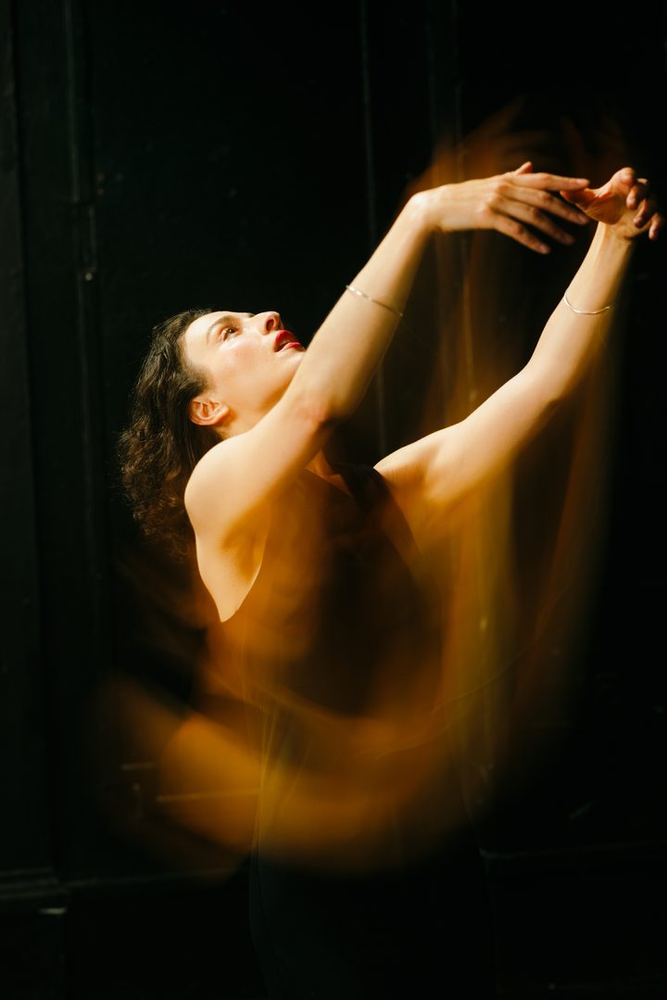
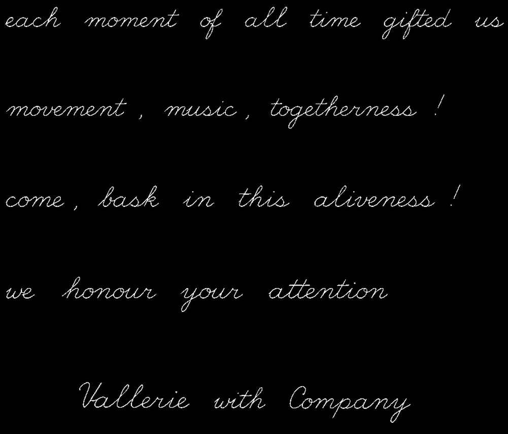
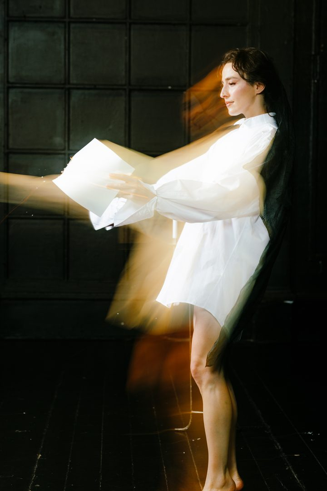
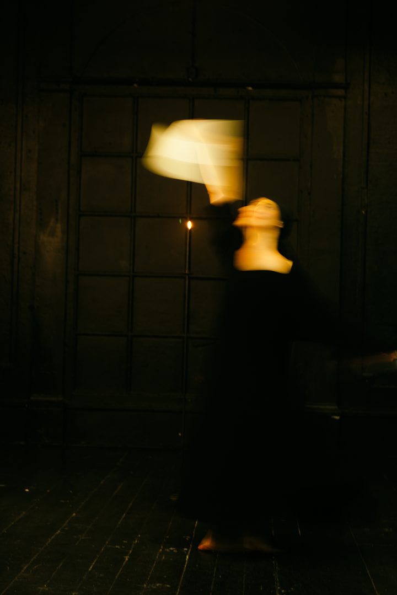

Amor Fati
Vallerie live with company
September 16–17 · 7–9 pm


and company
- Yazz Meavis
- Amina Avdić
- Carl Backman
- Eliot Charoff
- Lova Hellberg
- Joakim Benckert
- Zean Farence Diaz
- Kristoffer Benckert
- Elias Ljungberg Photography
